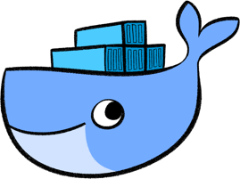

♥
Docker
Súbete al barco de las herramientas de desarrollo estándar üö¢
Hola üëã

Historia
¿Como hemos llegado hasta aqui?
Servidores de desarrollo local
- WAMP, XAMPP, MAMP, etc
- Gestores de paquetes: apt, rpm, brew (mac)
Virtualización completa
- Virtualbox, VMware, KVM
- Gestores de virtualización: vagrant
Otras gestores de virtualización ligera
- LXC
- chroot
Docker üêã
Historia
- Comienza como un gestor de LXC
- Reescritura en Go separando componentes y creando una API REST
Virtualizaci√≥n ligera üöà
Contenedores üì¶
Imágenes y contenedores
Docker multiplataforma
Mac y windows
Manos a la obra con docker
Como empezar a desenvolverse con los comandos
Instalar docker
Community edition
- Linux: añadir repos oficiales y
apt install docker-ce
- Mac: Descargar de la web o
brew cask install docker
- Windows: descargar instalador
Hola mundo
docker run hello-world
Un paso más allá
docker run -it --rm debian bash